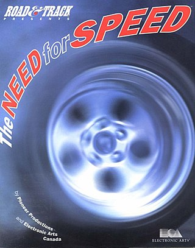
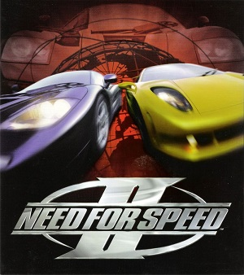
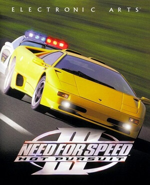
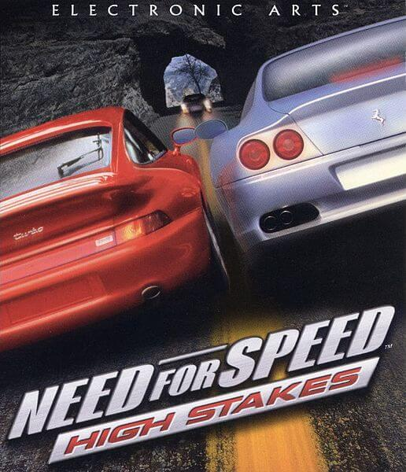

07.08.18 12:21
Видеоигра в жанре аркадного автосимулятора, разработанная студиями Pioneer Productions и EA Canada и изданная компанией Electronic Arts для игровой приставки 3DO в 1994 году. Впоследствии игра была портирована на другие платформы, такие как PlayStation, Sega Saturn и персональные компьютеры.
В 1995 году было выпущено специальное издание под названием The Need for Speed Special Edition. Это первая часть серии Need for Speed.
17.08.18 17:18
Представляет некоторые из самых редких и экзотических автомобилей, когда-либо доступных, включая концепт-кар Ford Indigo, а также трассы в странах Северной Америки, Европы, Азии и Австралии.
05.11.18 14:43
Need for Speed III: Hot Pursuit добавлен режим «Hot Pursuit», в котором игроку предстоит оторваться от преследования полиции, или быть полицейским, арестовывая лихачей.
06.11.18
Игра Need for Speed: High Stakes была выпущена летом 1999 года и локализована под разными названиями по всему миру: High Stakes (Северная Америка и Австралия), Road Challenge (Европа и Бразилия), Conduite en etat de liberte (Франция), Brennender Asphalt (Германия) и Over Drivin' IV (Япония).